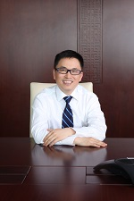

About Us
Hillhouse Capital Group (“Hillhouse”) is a leading investment management firm founded by Mr. Zhang Lei in 2005. We manage over US$18bn of assets as of Dec 2014. We manage capital for institutional clients such as university endowments, foundations, sovereign wealth funds, pensions and family offices.
Hillhouse is a long-term fundamental equity investor with a global mandate. Independent, fundamental and proprietary research is key to our investment process. Our team focuses on the consumer, TMT, industrials and healthcare sectors and invests in companies across all equity stages.
Hillhouse is a long-term fundamental equity investor with a global mandate. Independent, fundamental and proprietary research is key to our investment process. Our team focuses on the consumer, TMT, industrials and healthcare sectors and invests in companies across all equity stages.
Our People
|  | ZHANG LEI Founder, Chairman and Portfolio Manager |
|
|
Zhang Lei earned an MBA and M.A. in International Relations from Yale University and a B.A. in Economics from Renmin University of China, where he is the Vice Chairman and Trustee of the Board. In addition, Mr. Zhang is a Trustee of the Yale-NUS College, a collaboration between Yale University and the National University of Singapore, and the Chairman of Yale Asia Development Council... Full Profile > |